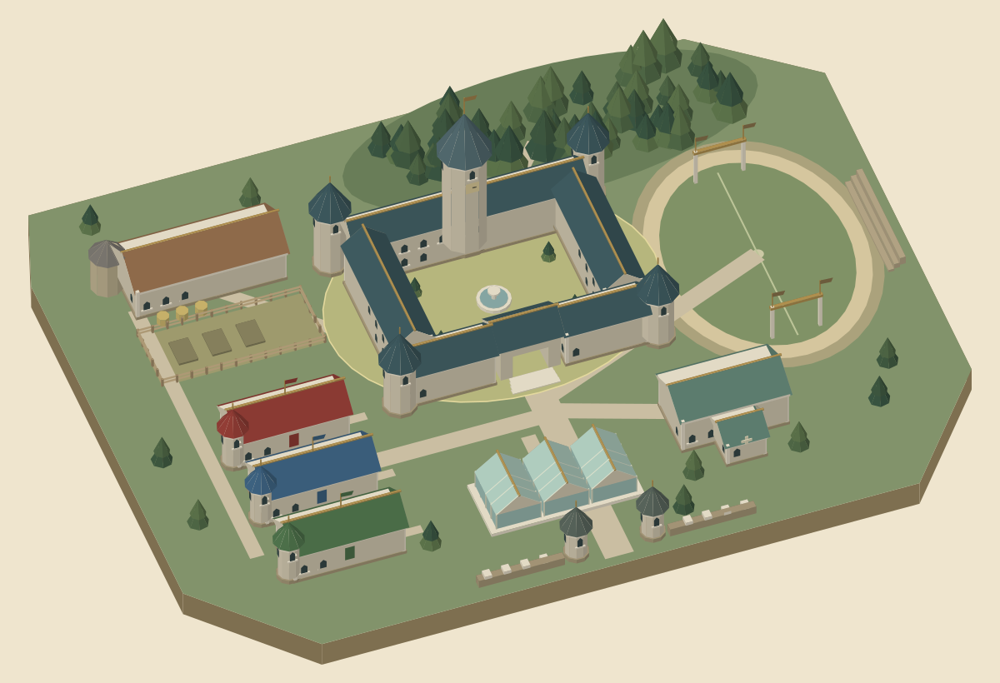

알아두면 좋은 세계
인간과 드래곤이 함께 세운 제국.
초대 여제와 파트너 드래곤이 전쟁을 끝낸 뒤 세워진 드라그 통일제국. 지금은 드라키아 3세가 다스립니다.
황실과 계승 이야기
황족은 태초의 드래곤 드라키시아의 힘과 긴 수명을 혈통으로 계승합니다. 현 여제는 초대 여제의 손녀입니다.
황녀는 태어난 순서대로 드라키시아에게 선택받을 기회를 얻고, 선택받은 인물이 계승 자격을 갖습니다. 드라키시아는 현재 황궁 안에 새로운 알로 남아 있습니다.
힘은, 서로를 이해하는 데서.
인간과 드래곤은 파트너가 되어 교감하고 마법을 공유합니다. 반지·완드·수정구는 그 연결을 돕는 아티팩트입니다.
마법과 드래곤 분류
엘더 드래곤은 수인화가 가능합니다. 분류의 정확한 위계와 성장 기준은 미공개입니다.
알이 당신을 선택하는 거리.
팬드래건 스트리트는 드래곤 알을 공식 분양하는 국가 직영 특구입니다. 땅의 요정족이 첫 만남을 돕습니다.
네 곳의 드래곤샵
세 기숙사
학생과 드래곤의 기질, 본인의 희망과 교수진 심사를 함께 반영합니다.
함께할 사람들 28
아카데미 시설 안내

좌우로 끌어 회전 · 번호를 눌러 시설 보기. 키보드는 지도에 초점을 맞춘 뒤 좌우 화살표로 회전, 더하기·빼기로 확대·축소, Home으로 초기화합니다.
실제 플레이와는 차이가 있을 수 있습니다.학교에 관하여
드래곤 테이밍·마법 교육에서 세계 최고 권위를 지닌 아카데미아는 개원 200주년에 금남 정책을 폐지하고 남녀공학으로 전환합니다. 황실과 상호 존중 관계를 유지하며, 황족에게 학교 운영의 특별한 권한을 부여하지 않습니다.

Your story, your choice.
이제, 당신의 차례입니다.
첫 페이지를 함께 펼쳐 볼까요?
크랙 AI 채팅 · 새 탭으로 열립니다.
작품 장르
판타지 · 아카데미 · 드래곤 · 파트너 청춘 성장 · 마법 배틀 · 비행 액션 · 황실 정치 · 일상 러브코미디